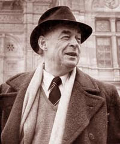

Мороз Анастасія Андріївна
Короткий опис
Часи, коли народитися, не обирають. Життя героїв Ремарка, як і його самого, припало на лихоліття. Війна, що ламає долі, втрата ілюзій, еміграція, хиткість та безнадія… Але, незважаючи на будь-які випробування, люди не втрачають ані мужності, ані внутрішньої сили та залишаються спроможними на самопожертву, справжню дружбу та велике кохання…
Зима 1939-го. Лікар Равік, біженець із нацистської Німеччини, знаходить притулок у Парижі. Його порожнє й похмуре життя змінює зустріч із Джоан… Він може захистити себе від поліції, але неспроможний сховатися від великого кохання! У цих несподіваних почуттів нема майбутнього, але чи важливо це тепер, коли світ на порозі війни?
Про автора
Ремарк народився в місті Оснабрюк, Німеччина, в католицькій робітничій родині. Він — друга дитина в родині, де було п'ятеро дітей. Його батько, Петер Франц Ремарк, працював палітурником. При народженні (хрещенні) хлопцеві дали ім'я Еріх Пауль. 1918 року, після смерті матері, Анни Марії Ремарк — у пам'ять про неї — змінив своє ім'я на Еріх Марія. Позаяк Ремарки були католиками, юнак потрапив до католицького педагогічного училища. Педагогічна освіта пізніше згодилася, коли він вчителював певний час у сільських школах.
Сам багато читав, серед улюблених творів — книги Ґете, Цвейґа, Достоєвського. У 17-річному віці Ремарк сам наважується почати літературну працю, стає членом літературного «Гуртка мрій».
1916 року був мобілізований на фронти Першої світової війни. Тоді йому було лише 18 років. 17 червня того ж року направлений на Західний фронт. Перебування на війні тривало три роки. 31 липня 1917 р. був поранений осколками гранати в ліву ногу, праву руку і шию. Водночас, попри власне поранення, зміг дотягти до медсанбату пораненого товариша. До закінчення війни пробув у військовому шпиталі в Німеччині.
Був бібліотекарем, бізнесменом, редактором в журналі «Echo Continental» і навіть продавцем надгробків, органістом при каплиці в лікарні для божевільних.
Період пошуків тривав, поки Ремарк не опинився в Берліні. Вів богемний спосіб життя, мав любовні романи. В Берліні зустрів Ютту Інгеборг Елену Цамбона, колишню танцівницю, хвору на туберкульоз. Невиліковна хвороба не стала на заваді, і 1925 року закоханий молодик узяв з нею шлюб. Вона стала прототипом кількох героїнь його наступних творів, зокрема, Пат з «Трьох товаришів». Шлюб тривав лише чотири роки, після чого вони розлучилися. Щоправда, 1938 р. знову побралися. Це зробили насамперед для того, аби допомогти Ютті емігрувати з нацистської Німеччини та отримати швейцарське громадянство (з 1931 Ремарк мешкав у Швейцарії). А 1939 р. вони переїхали до США, 1947 року — отримали американське громадянство. Їхній шлюб протримався до 1957 р. Після розлучення Ремарк щомісяця виплачував Ютті грошову допомогу, крім того, заповів їй 50 тис. доларів.
Ремарк був схильний до широких жестів. Вершиною марнославства та марнотратства молодого Ремарка був титул барона, куплений ним у збіднілого аристократа.
Розділ I
Женщина шла наискосок через мост прямо на Равика. Она шла быстро, но каким-то нетвердым шагом. Равик заметил ее лишь тогда, когда она оказалась почти рядом. Он увидел бледное лицо с высокими скулами и широко поставленными глазами. Это лицо оцепенело и походило на маску, в тусклом свете фонаря оно казалось безжизненным, а в глазах застыло выражение такой стеклянной пустоты, что Равик невольно насторожился.
Женщина прошла так близко, что едва не задела его. Он протянул руку и схватил ее за локоть. Она пошатнулась и, вероятно, упала бы, если бы он ее не удержал.
Равик крепко сжал руку женщины.
– Куда вы? – спросил он, немного помедлив. Женщина смотрела на него в упор.
– Пустите! – прошептала она.
Равик ничего не ответил. Он по-прежнему крепко держал ее за руку.– Пустите меня! Что это? – Женщина едва шевелила губами.
Равику казалось, что она даже не видит его. Она смотрела сквозь него, куда-то в пустоту ночи. Просто что-то помешало ей, и она повторяла одно и то же:
– Пустите меня!
Он сразу понял, что она не проститутка и не пьяна. Он слегка разжал пальцы. Она даже не заметила этого, хотя при желании могла бы легко вырваться.
Равик немного подождал.
– Куда же вы, в самом деле? Ночью, одна, в Париже? – спокойно спросил он еще раз и отпустил ее руку.
Женщина молчала, но с места не сдвинулась. Раз остановившись, она, казалось, уже не могла идти дальше.
Равик прислонился к парапету моста. Он ощутил под руками сырой и пористый камень.
– Уж не туда ли? – Он указал вниз, где, беспокойно поблескивая в сероватой мгле, текла Сена, набегая на тени моста Альма.
Женщина не ответила.
– Слишком рано, – сказал Равик. – Слишком рано, да и слишком холодно. Ноябрь.
Он достал пачку сигарет, затем нашарил в кармане спички. На картонке их оказалось всего две. Слегка наклонившись, он прикрыл ладонями пламя от легкого ветра с реки.
– Дайте и мне сигарету, – бесцветным голосом произнесла женщина.
Равик выпрямился и показал пачку.
– Алжирские. Черный табак. Его курят солдаты Иностранного легиона. Пожалуй, для вас слишком крепок. Других нет.
Женщина покачала головой и взяла сигарету. Равик поднес ей горящую спичку. Она сделала несколько глубоких затяжек. Равик бросил спичку через парапет. Словно маленькая падающая звезда, спичка пролетела сквозь тьму и погасла, достигнув воды.
На мост медленно въехало такси. Шофер остановил машину, посмотрел на них, немного выждал и двинулся дальше, вверх по мокрой, поблескивающей в темноте авеню Георга Пятого.
Внезапно Равик почувствовал, как сильно он устал. Весь день напролет он работал и, придя домой, не мог уснуть. Тогда он вышел на улицу – хотелось выпить. И теперь, в промозглой сырости глубокой ночи, он чувствовал неодолимую усталость.
Равик посмотрел на женщину. Почему, собственно, он ее остановил? С ней что-то стряслось, это было ясно. Но ему-то какое дело? Мало ли он встречал женщин, с которыми что-то случалось, особенно ночью, особенно в Париже. Сейчас это ему было безразлично, он хотел лишь одного – спать.
– Ступайте домой, – сказал Равик. – Что вам здесь делать в такое время? Еще, чего доброго, не оберетесь неприятностей.
Он поднял воротник, намереваясь уйти. Женщина смотрела на него непонимающими глазами.
– Домой? – повторила она.
Равик пожал плечами.
– Домой, к себе на квартиру, в отель – куда угодно. Неужели вам хочется попасть в полицию?
– В отель! О Боже! – проговорила женщина. Равик остановился. Опять кому-то некуда идти, подумал он. Это следовало предвидеть. Всегда одно и то же. Ночью не знают, куда деваться, а утром исчезают прежде, чем успеешь проснуться. По утрам они почему-то знают, куда идти. Вечное дешевое отчаяние.
– отчаяние ночной темноты. Приходит с темнотой и исчезает вместе с нею. Он бросил окурок. Да разве он сам не сыт всем этим по горло?
– Пойдемте куда-нибудь, выпьем рюмку водки, – сказал он.
Так проще всего – расплатиться и уйти, а там пусть сама позаботится о себе.
Женщина сделала неверное движение и споткнулась. Равик снова поддержал ее.
– Устали? – спросил он.
– Не знаю. Наверно.
– Настолько, что не можете спать?
Она кивнула.
– Это бывает. Пойдемте. Я провожу вас.
Они пошли вверх по авеню Марсо. Женщина тяжело опиралась на Равика – опиралась так, будто каждую минуту боялась упасть.
Они пересекли авеню Петра Сербского. За перекрестком улицы Шайо, вдали, на фоне дождли – вого неба возникла зыбкая и темная громада Триумфальной арки.
Равик указал на освещенный узкий вход, ведущий в маленький погребок.
– Сюда… Тут что-нибудь да найдется.
Это был шоферский кабачок. За столиком сидело несколько шоферов такси и две проститутки. Шоферы играли в карты. Проститутки пили абсент. Они смерили женщину быстрым взглядом и равнодушно отвернулись. Одна, постарше, громко зевнула, другая принялась лениво подкрашивать губы. В глубине зала совсем еще юный кельнер, с лицом обозленной крысы, посыпал опилками каменные плитки и подметал пол. Равик выбрал столик у входа. Так было удобнее: скорее удастся уйти. Он даже не снял пальто.
– Что будете пить? – спросил он.
– Не знаю. Все равно.
– Два кальвадоса, – сказал Равик кельнеру в жилетке и рубашке с засученными рукавами. – И пачку сигарет «Честерфилд».
– У нас только французские.
– Что ж. Тогда пачку «Лоран», зеленых.
– Зеленых нет. Только синие.
Равик разглядывал руку кельнера, на ней была вытатуирована голая женщина, шагающая по облакам. Перехватив его взгляд, кельнер сжал кулак и напряг мускулы. Женщина непристойно задвигала животом.
– Значит, синие, – сказал Равик.
Кельнер осклабился.
– Может, еще найдется пачка зеленых. – И удалился, шаркая туфлями.
Равик посмотрел ему вслед.
– Красные шлепанцы, – проговорил он, – и красотка, исполняющая танец живота! Похоже, он служил в турецком флоте.
Женщина положила руки на стол. Казалось, ей больше никогда их не поднять. Руки были холеные, но это еще ни о чем не говорило. Впрочем, не такие уж они были холеные. Равик заметил, что ноготь на среднем пальце правой руки, по-видимому, надломился и был оторван, не подпилен. Лак местами сошел.
Кельнер принес рюмки и пачку сигарет.
Кельнер принес рюмки и пачку сигарет.– «Лоран», зеленые. Все-таки нашлась одна пачка.
– Так я и думал. Вы служили на флоте?
– Нет. В цирке.
– Еще лучше. – Равик подал женщине рюмку. – Вот, выпейте. Ночью кальвадос – самое подходящее. А может, хотите кофе?
– Нет.
– Выпейте залпом.
Женщина кивнула и выпила. Равик разглядывал ее. Потухшее лицо, блеклое и почти без всякого выражения. Полные, но бледные губы, их очертания словно стерлись, и только волосы естественно-золотистого цвета были очень хороши. Она носила берет. А из-под плаща виднелся синий английский костюм, сшитый у хорошего портного. Но зеленый камень в перстне был слишком велик, чтобы не быть фальшивым.
– Еще рюмку? – спросил Равик.
Женщина кивнула.
Он подозвал кельнера.
– Еще два кальвадоса. Только рюмки побольше.
– И налить побольше?
– Да.
– Значит, два двойных кальвадоса.
– Угадали.
Равик решил быстро выпить свою рюмку и уйти. Ему было скучно, и он очень устал. Вообще же он умел терпеливо переносить превратности судьбы: за плечами сорок лет беспокойной и переменчивой жизни. Ситуации вроде этой были ему не в новинку. Он жил в Париже несколько лет, страдал бессонницей и ночами часто бродил по городу – поневоле приходилось видеть всякое.
Кельнер принес заказанное. Равик осторожно поставил перед женщиной рюмку яблочной водки, пряной и ароматной.
– Выпейте еще. Толку, конечно, будет мало, зато согревает. И что бы с вами ни случилось – ничего не принимайте близко к сердцу. Немногое на свете долго бывает важным.
Женщина подняла на него глаза, но к рюмке не прикоснулась.
– Нет, это и в самом деле так, – сказал Равик. – Особенно если дело происходит ночью. Ночь многое усложняет.
Женщина по-прежнему смотрела на него.
– Незачем меня утешать, – наконец проговорила она.
– Тем лучше.
Равик поискал глазами кельнера. Хватит. Ему это надоело, он хорошо знал таких женщин. Вероятно, из русских эмигрантов, подумал он.
Стоит им где-нибудь пристроиться и слегка захмелеть, как сразу же переходят на категорический тон.
– Вы русская?
– Нет.
Равик расплатился и встал, собираясь проститься. Сразу же встала и женщина. Она сделала это молча, как нечто само собой разумеющееся. Равик нерешительно взглянул на нее. Ладно, подумал он. Проститься можно и на улице.
Начался дождь. У входа Равик остановился.
– Вам куда?
Он решил, что пойдет в противоположном направлении.
– Не знаю. Куда-нибудь.
– Где вы живете?
Женщина вздрогнула.
– Туда я пойти не могу. Нет! Не могу! Только не туда!
В ее глазах внезапно появилось выражение дикого страха. Ссора, подумал Равик. Разругалась с му – жем и убежала из дому. Завтра днем одумается и вернется.
– Разве вам не к кому пойти? К какой-нибудь знакомой? Отсюда можно позвонить.
– Нет. Не к кому.
– Но ведь надо же где-то переночевать. Нет денег на отель?
– Есть.
– Так пойдите в любой отель. Их тут много.
Женщина молчала.
– И все-таки где-то вам надо переночевать, – сказал Равик, теряя терпение. – Нельзя же оставаться на улице, под дождем.
Женщина застегнула плащ.
– Вы правы, – сказала она, словно наконец решилась на что-то. – Вы совершенно правы. Спасибо. Больше обо мне не беспокойтесь. Где-нибудь устроюсь. Спасибо. – Она зажала в кулаке углы воротника. – Спасибо за все.
Женщина исподлобья смотрела на Равика глазами, полными муки, тщетно силясь улыбнуться; затем, торопливо и неслышно ступая, ушла в дождь и туман.
С минуту Равик не двигался с места.
– Черт возьми, – растерянно и нерешительно пробормотал он.
Равик не понимал, как и почему так получилось, – горестная ли улыбка, взгляд, или пустынная улица, или ночь… Но он понимал, что нельзя так вот просто отпустить эту женщину; там, в тумане, она вдруг показалась ему заблудившимся ребенком.
Равик догнал ее.
– Пойдемте со мной, – сухо сказал он. – Что-нибудь придумаем.
Они вышли на площадь Этуаль. Она раскинулась перед ними в струящейся серой мгле, величественная и бесконечная. Туман сгустился, и улиц, лучами расходившихся во все стороны, не было видно. Видна была только огромная площадь с висящими тут и там тусклыми лунами фонарей и ка – менным сводом Триумфальной арки, огромной, терявшейся в тумане; она словно подпирала унылое небо и защищала собой сиротливое бледное пламя на могиле Неизвестного солдата, похожей на последнюю могилу человечества, затерянную в ночи и одиночестве.
Они пересекли площадь. Равик шел быстро. Он слишком устал, чтобы думать. Рядом с собой он слышал неуверенные и громкие шаги женщины, она шла молча, понурившись, засунув руки в карманы плаща, – маленький огонек чужой жизни. И вдруг в позднем безлюдье площади она на какой-то миг показалась ему странно близкой, хотя он ничего о ней не знал или, быть может, именно потому. Она была ему чужой. Впрочем, и он чувствовал себя везде чужим, и это странным образом сближало – больше, чем все слова и притупляющая чувства долголетняя привычка.
Равик жил в небольшом отеле в переулке за площадью Терн, неподалеку от авеню Ваграм. Это было довольно обветшалое здание. Новой была только вывеска над входом – «Отель „Энтернасьональ"“.
Равик нажал кнопку звонка.
– Есть свободный номер? – спросил он парня, открывшего дверь.
Тот вытаращил заспанные глаза.
– Портье нет на месте, – наконец проговорил он, запинаясь.
– Это я и сам вижу. Я спрашиваю, нет ли свободного номера.
Парень недоуменно пожал плечами. Он видел, что Равик пришел с женщиной, но не понимал, зачем ему понадобилась еще одна комната. Насколько ему было известно, в подобных случаях достаточно одной.
– Мадам спит. Если я разбужу ее, она меня выгонит, – сказал он и почесал одной ногой другую.
– Ладно. Придется посмотреть самому.
Равик дал парню на чай, взял свой ключ и стал подниматься по лестнице. Женщина шла за ним. Прежде чем открыть свой номер, он взглянул на соседнюю дверь. Обуви перед ней не было. Равик дважды постучал. Никто не откликнулся. Он осторожно нажал на ручку – дверь оказалась на замке.
– Еще вчера эта комната пустовала, – пробормотал он. – Попробуем проникнуть с другой стороны. Хозяйка заперла, наверно, боится, как бы не разбежались клопы.
Равик открыл свою комнату.
Равик открыл свою комнату.
– Присядьте. – Он указал на красный диван. – Я сейчас.
Он отворил застекленную дверь, ведущую на узкий балкон, перелез через железную решетку на соседний и попытался открыть дверь. Однако она была заперта.
Разочарованный, он вернулся в комнату.
– Ничего не выходит. Раздобыть номер не удалось.
Женщина сидела в уголке дивана.
– Можно мне еще немного побыть здесь?
Равик внимательно посмотрел на нее. Ее лицо словно распадалось от усталости. Казалось, ей не подняться с места.
– Можете остаться.
– Только на минутку.
– Можете даже тут переночевать. Это самое простое.
Женщина будто не слушала его. Она медленно, почти машинально покачала головой.
– Оставили бы меня на улице. А теперь… мне кажется, теперь я не смогу…
– И мне так кажется. Оставайтесь и ложитесь спать. Это самое лучшее. А завтра посмотрим. Женщина взглянула на него.
– Мне бы не хотелось…
– Господи, – сказал Равик. – Да вы ничуть меня не стесните! Сколько раз тут уже ночевали люди, не знавшие, куда им деваться. В этом отеле живут беженцы. Ночные пришельцы здесь никого не удивляют. Ложитесь на кровать. Я устроюсь на диване. Мне не привыкать.
– Нет, нет… я просто посижу. Если только вы разрешите, мне этого вполне достаточно.
– Ну, как хотите.
Равик снял пальто и повесил на вешалку. Потом взял с кровати одеяло с подушкой и придвинул к дивану стул. Он принес из ванной купальный халат и бросил на спинку стула.
– Вот, – сказал он, – все это вам. Могу еще предложить пижаму – она в комоде. Больше я вами не занимаюсь. Если хотите – примите ванну. А мне еще надо кое-что сделать.
Женщина покачала головой.
Равик остановился перед ней.
– А плащ все-таки снимем, – сказал он. – Насквозь промок. Да и берет тоже. Дайте-ка сюда.
Она отдала ему плащ и берет. Он положил подушку на валик дивана.
– Это под голову. Стул – чтобы не свалились во сне. – Равик придвинул стул вплотную к дивану. – А теперь еще туфли… Уж конечно, тоже промокли. Того и гляди, простудитесь. – Он снял с нее туфли, достал из комода пару шерстяных носков и надел ей на ноги. – Так, теперь еще куда ни шло. Даже в самые тяжелые времена надо хоть немного думать о комфорте. Старое солдатское правило.
– Спасибо, – сказала женщина. – Большое спасибо.
Равик прошел в ванную и открыл краны. Вода полилась в умывальник. Он развязал галстук и рассеянно оглядел себя в зеркале. Проницательные, глубоко посаженные глаза; узкое лицо – оно выглядело бы смертельно усталым, если бы не эти глаза; резкие складки, прочерченные от носа к уголкам рта, и неожиданно мягкий рисунок губ, а над правым глазом – длинный, в мелких рубчиках шрам, теряющийся в волосах.
Телефонный звонок всполошил его.
– Черт возьми! – Он и вправду обо всем позабыл. С ним это случалось – полное погружение в собственные мысли. А тут еще эта женщина.
– Иду! – крикнул Равик. – Испугались?
Он снял трубку.
– Что?.. Да. Хорошо… да… конечно… да…
все будет в порядке… да. Где? Хорошо, сейчас же еду. Горячего кофе, и покрепче… да…
Он осторожно положил трубку и, задумавшись, присел на край дивана.
– Мне надо уйти, – сказал он. – Срочно.
Женщина тотчас поднялась. Она слегка качнулась и ухватилась за спинку стула.
– Нет, нет… – Равика тронула эта покорная готовность. – Оставайтесь здесь. Я должен уйти на час-другой, не знаю точно на сколько. Непременно оставайтесь.
Он надел пальто. На какой-то миг мелькнуло подозрение, но Равик его тотчас же отогнал. Эта женщина не станет воровать. Не из тех. Таких он знал слишком хорошо. Да здесь и украсть-то нечего. Равик был уже в дверях, когда женщина спросила:
– Можно мне пойти с вами?
– Нет, никак нельзя. Побудьте здесь. Берите все, что понадобится. Если хотите, ложитесь в постель. Коньяк в шкафу. Спите…
Он повернулся.
– Не выключайте свет, – торопливо проговорила она.
Равик отпустил дверную ручку.
– Боитесь? – спросил он.
Она кивнула.
Он показал на ключ.
– Заприте за мной дверь. Ключ выньте. Внизу есть запасной.
Она покачала головой.
– Не в этом дело. Только, пожалуйста, оставьте свет.
– Ах, вот оно что! – Равик испытующе посмотрел на нее. – Да я и не собирался его выклю – чать. Пусть горит. Мне это знакомо. Было и у меня такое время.
На углу улицы Акаций ему попалось такси.
– Улица Лористон, четырнадцать. Скорее!
Шофер развернулся и поехал по авеню Карно. Когда они пересекали авеню де ля Гранд Арме, справа выскочила маленькая двухместная машина. Столкновение было бы неизбежным, не будь мостовая мокрой и скользкой. Резко затормозившую малолитражку занесло на середину улицы. Такси едва не задело ее радиатором. Легкий автомобиль закружился, как карусель. Это был маленький «рено», за рулем сидел мужчина в очках и черном котелке. При каждом повороте мелькало его бледное возмущенное лицо. Наконец машина перестала вертеться и устремилась в направлении Триумфальной арки, высившейся вдалеке подобно гигантским вратам Аида; «рено» напоминал маленькое зеленое насекомое; из него высовывался бледный кулак, грозивший ночному небу.
Шофер обернулся.
– Видели что-либо подобное?
– Да, – ответил Равик.
– Какого черта этот тип в котелке несется ночью как угорелый? Главное дело – котелок напялил!
– Он прав. Ведь он ехал по главной магистрали. Зачем же ругаться?
– Ясно, прав. Потому-то я и ругаюсь.
– А что бы вы сделали, если бы он в самом деле был неправ?
– Тоже ругался бы.
– Вижу, вы не прочь отвести душу.
– Но тогда бы я ругался по-другому, – заявил шофер, сворачивая на авеню Фош. – С большей уверенностью. Понятно?
– Не совсем. Сбавляйте скорость на перекрестках.
– А я что делаю? Мостовые как маслом смазаны, будь они неладны! А зачем вы, собственно, спрашиваете, если все равно не хотите меня слушать?
– Потому что я очень устал, – нетерпеливо проговорил Равик. – Потому что сейчас ночь. По – тому что, если хотите знать, все мы словно искорки, гонимые неведомым ветром. Езжайте быстрее.
– Вот это другое дело, – заметил шофер и с некоторым почтением коснулся пальцами козырька фуражки. – Теперь все понятно. У Равика неожиданно мелькнуло подозрение.
– Послушайте, вы русский эмигрант?
– Нет, но в ожидании пассажиров читаю всякую всячину.
Не везет мне сегодня с русскими, подумал Равик. Он откинулся на спинку сиденья. Хорошо бы кофе, подумал он. Горячего, черного. Надеюсь, его хватит. Руки должны быть дьявольски спокойными. В крайнем случае Вебер сделает мне укол. Впрочем, все и так будет в порядке. Он опустил стекло и медленно вдохнул сырой воздух.
Розділ II
В маленькой операционной было светло, как днем. Комната походила на образцовую бойню. На полу стояли ведра с ватой, пропитанной кровью, вокруг были разбросаны бинты и тампоны, багрово-красный цвет торжественно и громогласно бросал вызов безмолвной белизне. Вебер сидел в предоперационной за лакированным стальным столиком и что-то записывал; сестра кипятила инструменты; вода клокотала, электрический свет, казалось, шипел, и лишь тело, лежавшее на столе, было ко всему безучастным – его уже ничто не трогало.
Равик принялся мыть руки жидким мылом. Он мыл их с каким-то угрюмым остервенением, будто хотел содрать с них кожу.
– Дерьмо! – пробормотал он. – Гнусное, проклятое дерьмо!
Операционная сестра с отвращением посмотрела на него. Вебер поднял голову.
– Спокойно, Эжени! Все хирурги ругаются. Особенно если что-нибудь не так. Вам пора бы к этому привыкнуть.
Сестра бросила инструменты в кипящую воду.
– Профессор Перье никогда не ругался, – оскорбленно заявила она. – И тем не менее спас многих людей.
– Профессор Перье был специалистом по мозговым операциям. Тончайшая, виртуозная техника, Эжени. А мы потрошим животы. Совсем другое дело. – Вебер захлопнул тетрадь с записями и встал. – Вы хорошо поработали, Равик. Но что Поделаешь, коли до тебя орудовал коновал?
– Все-таки… иногда можно кое-что сделать. Равик вытер руки и закурил сигарету. Сестра с молчаливым неодобрением распахнула окно.
– Браво, Эжени, – похвалил ее Вебер. – Вы всегда действуете согласно инструкциям.
– У меня есть определенные обязанности. Я не желаю взлететь на воздух. Здесь спирт и эфир.
– Это прекрасно, Эжени. И успокоительно.
– А некоторые таких обязанностей не имеют. И не хотят иметь.
– Это в ваш адрес, Равик! – Вебер рассмеялся. – Нам лучше всего удалиться. По утрам Эжени весьма агрессивно настроена. А здесь нам все равно больше нечего делать.
Равик взглянул на сестру, имевшую определенные обязанности. Она бесстрашно встретила его взгляд. Очки в никелевой оправе придавали ее пустому лицу выражение полной
неприступности. Оба они были людьми, но любое дерево казалось ему роднее, чем она.– Простите, – сказал он. – Вы правы.
На белом столе лежало то, что еще несколько часов назад было надеждой, дыханием, болью и трепещущей жизнью. Теперь это был всего лишь труп, и человек-автомат, именуемый сестрой Эжени и гордившийся тем, что никогда не совершал ошибок, накрыл его простыней и укатил прочь. Такие всех переживут, подумал Равик. Солнце не любит эти деревянные души, оно забывает о них. Потому-то они и живут бесконечно долго.
– До свидания, Эжени, – сказал Вебер. – Желаю вам хорошенько выспаться.
– До свидания, доктор Вебер. Спасибо, господин доктор.
– До свидания, – сказал Равик. – Простите меня за ругань.
– Всего хорошего, – ледяным тоном ответила Эжени.
Вебер ухмыльнулся.
– Железобетонный характер!
Над городом вставало серое утро. На улицах погромыхивали машины, собиравшие мусор. Вебер поднял воротник.
– Отвратительная погода! Подвезти вас, Равик?
– Нет, спасибо. Хочу пройтись.
– В такую погоду? Я могу вас подвезти. Нам почти по пути.
Равик отрицательно покачал головой.
– Спасибо, Вебер.
Вебер внимательно посмотрел на него.
– Странно, что вы до сих пор расстраиваетесь, когда кто-нибудь умирает у вас под ножом. Ведь вы режете уже пятнадцать лет, и все это вам хорошо знакомо.
– Да, знакомо. Я и не расстраиваюсь.
Вебер стоял перед Равиком, широкий и плотный. Его большое круглое лицо сияло, как спелое нормандское яблоко. На черных подстриженных усах сверкали капли дождя. У тротуара ждал «бьюик». Он тоже сверкал. Сейчас Вебер сядет в машину и спокойно покатит за город, в свой розовый, кукольный домик, с чистенькой, сверкающей женой и двумя чистенькими, сверкающими детками. В общем – чистенькое, сверкающее существование! Разве ему понять эту бездыханность, это напряжение, когда нож вот-вот сделает первый разрез, когда вслед за легким нажимом тянется узкая красная полоска крови, когда тело в иглах и зажимах раскрывается, подобно занавесу, и обнажается то, что никогда не видело света, когда, подобно охотнику в джунглях, ты идешь по следу и вдруг – в разрушенных тканях, опухолях, узлах и разрывах лицом к лицу сталкиваешься с могучим хищником – смертью – и вступаешь в борьбу, вооруженный лишь иглой, тонким лезвием и бесконечно уверенной рукой… Разве ему понять, что ты испытываешь, когда собранность достигла предельного, слепящего напряжения и вдруг в кровь больного врывается что-то загадочное, черное, какая-то величественная издевка – и нож словно тупеет, игла становится ломкой, а рука непослушной; когда невидимое, таинственное, пульсирующее – жизнь – неожиданно отхлынет от бессильных рук и распадается, увлекаемое призрачным, темным вихрем, который ни догнать, ни прогнать… когда лицо, которое только что еще жило, было каким-то «я», имело имя, превращается в безымянную, застывшую маску… какое яростное, какое бессмысленное и мятежное бессилие охватывает тебя… разве ему все это понять… да и что тут объяснишь?
Равик снова закурил.
– Ей шел двадцать первый год, – сказал он. Вебер носовым платком смахнул с усов блестящие капли.
– Вы работали великолепно. Я бы так не смог. Но разве спасешь то, что уже испоганил какой-то коновал; уж вы-то здесь ни при чем. Если бы мы рассуждали по-иному, что бы с нами стало?
– Да, – сказал Равик, – что бы с нами стало?
Вебер спрятал платок в карман.
– После всего, что вам пришлось испытать, вы должны были чертовски закалиться.
Равик взглянул на него с легкой иронией.
– Человек никогда не может закалиться. Он может только ко многому привыкнуть.
– Это я и имел в виду.
– Да, но есть вещи, к которым не привыкнешь никогда. Тут трудно докопаться до причины. Мо – жет быть, все дело в кофе – именно он так сильно возбудил меня. А мы принимаем это за волнение.
– Кофе был хорош, правда?
– Очень.– Варить кофе – в этом я кое-что смыслю. Я словно предчувствовал, что вам он понадобится, потому и приготовил сам. Настоящий кофе, а не черное пойло, которое приготовляет Эжени, не так ли?
– Никакого сравнения. В этом вы действительно мастер.
Вебер сел в машину, включил двигатель и высунулся в окно.
– А может, я все-таки вас подброшу? Ведь вы, наверно, очень устали.
Тюлень, подумал Равик, не слушая его. Похож на пышущего здоровьем тюленя. Но что с того? Зачем все это лезет мне в голову? Опять эта проклятая раздвоенность – делаешь одно, думаешь о другом.
– Я не устал, – сказал он. – Кофе взбодрил меня. А вам действительно надо выспаться, Вебер.
Вебер рассмеялся. Под черными усами сверкнули зубы.
– Я решил не ложиться. Поработаю в своем саду. Буду сажать тюльпаны и нарциссы.
Тюльпаны и нарциссы, подумал Равик. Аккуратненькие кругленькие клумбы. Чистенькие дорожки, посыпанные гравием. Тюльпаны и нарциссы – оранжево-золотистая буря весны.
– До свидания, Вебер, – сказал он. – Ведь вы позаботитесь об остальном?
– Разумеется. Вечером я вам позвоню. Гонорар, к сожалению, будет невелик. Так, мелочь. Девушка была бедна и, по-видимому, не имела родных. Это мы еще уточним.
Равик небрежно махнул рукой.
– Она дала Эжени сто франков. Вероятно, это все, что у нее было. Значит, вам причитается двадцать пять.
– Ладно, ладно, – нетерпеливо произнес Равик. – До свидания, Вебер.
– До свидания. До завтра. У видимся восемь утра.
Равик не спеша шел по улице Лористон. Будь сейчас лето, он уселся бы где-нибудь в Булонском лесу на скамейке и, греясь на утреннем солнце, бездумно глядел бы на воду и на зеленый лес, пока не ослабло бы напряжение. Затем поехал бы в отель и завалился спать.
Он вошел в бистро на углу улицы Буасьер. У стойки стояло несколько рабочих и шоферов. Они пили горячий черный кофе, макая в него бриоши. Равик с минуту наблюдал за ними. То была надежная, простая жизнь – с яростной борьбой за существование, напряженным трудом, усталостью по вечерам, едой, женщиной и тяжелым сном без сновидений.
– Рюмку вишневки, – сказал он.
На правой ноге умершей девушки была дешевая узкая цепочка из накладного золота – одна из тех побрякушек, на которые люди падки в молодости, когда они сентиментальны и лишены вкуса; цепочка с маленькой пластинкой, на которой выгравировано: «Toujors Charles», [1] запаянная так, что ее нельзя было снять с ноги; цепочка, рассказывавшая о воскресных днях в лесу на берегу Сены, о влюбленности и глупой молодости, о маленькой ювелирной лавчонке где-нибудь в Нейи, о сентябрьских ночах в мансарде… и вдруг – задержка, ожидание, страх, а Шарля и след простыл… подруга, дающая адрес… акушерка, стол, покрытый клеенкой, жгучая боль и кровь, кровь… растерянное лицо старухи… чьи-то руки поспешно – лишь бы отделаться – подсаживают в такси… дни мучений, когда лежишь, скорчившись, в своей каморке… и наконец карета «скорой помощи», клиника, последние сто франков, скомканные в горячей, потной руке, и… слишком поздно.
Заскулил приемник. Танго, гнусавый голос поет дурацкие куплеты. Равик поймал себя на том, что мысленно повторяет весь ход операции. Он проверял и контролировал каждое свое движение. Если бы его вызвали на несколько часов раньше, возможно, что-то и удалось бы сделать. Вебер звонил ему, но его не оказалось на месте. И только потому, что он слишком долго проторчал на мосту Альма, девушке пришлось умереть. Такие операции Вебер самостоятельно делать не умел. Безумие случайности. Нога с золотой цепочкой…
Приди ко мне в лодку, сияет луна, – надрывался фальцетом тенор.
Равик расплатился и вышел. На улице он остановил такси.
– В «Озирис».
«Озирис» был большой, солидный публичный дом с огромным баром в египетском стиле.
– Уже закрываемся, – сказал швейцар. – Никого больше нет.
– Никого?
– Только мадам Роланда. Все дамы уже разъехались.
– Ладно.
Швейцар был в галошах. Он стоял на мостовой и с недовольным видом переминался с ноги на ногу.
– Не отпускайте такси. Другое не так легко найти. Мы кончили работать.
– Это вы уже сказали. А такси я себе достану. Равик сунул швейцару пачку сигарет в карман и через узкую дверь, минуя гардероб, прошел в большой зал. В баре было пусто. Он являл собой обычную картину недавнего ночного кутежа: лужи пролитого вина, опрокинутые стулья, окурки, запах табака, сладких духов и пота.
– Роланда, – позвал Равик. Она стояла у стола, на котором лежала груда розового шелкового белья.
– Равик, – сказала она, нисколько не удивившись. – Так поздно. Чего ты хочешь? Девушку или выпить? Или и то и другое?
– Водки. Польской.
Роланда принесла бутылку и рюмку.
– Налей себе сам. Мне еще надо рассортировать и переписать белье. Сейчас придет машина из прачечной. Не перепишешь каждую тряпку в отдельности, эта банда все разворует, как стая сорок. Шоферня, сам понимаешь. Все они любят делать подарки своим подружкам.
Равик кивнул.
– Включи музыку, Роланда. Погромче.
– Ладно.
Роланда включила приемник. Загремели литавры и барабаны. В высоком пустом зале разразилась звуковая буря.
– Не слишком ли громко, Равик?
– Нет.
Слишком громко? Что могло сейчас казаться слишком громким? Только тишина. Тишина, в которой тебя разносит на куски, как в безвоздушном пространстве.
– Ну, вот и все, – сказала Роланда и подошла к столику Равика. У нее была плотная фигура, ясное лицо и спокойные черные глаза. Черное пуританское платье выдавало в ней распорядительницу и выделяло ее среди полуголых девиц.
– Выпьем, Роланда?
– Ладно. Давай.
Равик принес из бара рюмку и налил. Роланда удержала его руку, когда рюмка наполнилась наполовину.
– Хватит! Больше не хочу.
– Ненавижу недолитые рюмки. Уж лучше не допить.
– Зачем? Это было бы расточительством.
Равик взглянул на нее. Солидное, умное лицо. Он улыбнулся.;
– Расточительство! Французы вечно боятся его. А кому нужна бережливость? Тебя ведь тоже никто не бережет.
– Тут коммерция. Совсем другое дело.
Равик рассмеялся.
– Выпьем за коммерцию! Чем бы оказался мир без морали дельцов? Сборищем преступников, идеалистов и бездельников.
– Тебе нужна девушка, – сказала Роланда. – Могу позвонить Кики. Она очень хороша. Двадцать один год.
– Вот как. И ей двадцать один год. Нет, такие уже не для меня. – Равик снова наполнил свою рюмку. – Роланда, о чем ты думаешь перед сном?
– Чаще всего ни о чем. Слишком устаю.
– А когда не очень устала?
– О Type.
– Почему о Type?
– Там у меня тетка. У нее дом с магазином. Дважды я платила за него по закладной. Когда она умрет – ей семьдесят шесть, – дом достанется мне. Тогда я перестрою магазин под кафе. Светлые обои в цветочках, три музыканта – пианино, скрипка, виолончель, в глубине – бар. Небольшой, но изящный. Дом расположен в хорошем квартале. Думаю, что за девять с половиной тысяч франков смогу его прилично обставить, приобрету даже гардины и люстры. Кроме того, на первых порах хочется иметь в запасе тысяч пять. Ну и, конечно, квартирная плата с жильцов верхних этажей. Вот о чем я думаю.
– Ты родилась в Type?
– Да, но никому не известно, где я находилась потом. Если дело пойдет на лад, никто и не станет интересоваться. Деньги прикрывают все.
– Не все, но многое. – Равик почувствовал какую-то тяжесть в висках и стал говорить медленнее. – С меня, пожалуй, хватит, – сказал он, расплачиваясь. – В Type ты выйдешь замуж, Роланда?
– Не сразу, через несколько лет. У меня там есть друг.
– Ездишь к нему?
– Изредка. Время от времени он пишет мне. По другому адресу, разумеется. Он женат, но жена в больнице. Туберкулез. Врачи говорят, еще год-два протянет – не больше. И тогда он свободен.
Равик встал.
– Благослови тебя Бог, Роланда. Ты рассуждаешь здраво.
Она доверчиво улыбнулась, соглашаясь с ним. На ее ясном, свежем лице не было и тени усталости, словно она только что проснулась. Она знала, чего хочет. Жизнь не была для нее загадкой.
Небо над городом посветлело. Дождь прошел. На углах улиц маленькими бронированными башнями стояли писсуары. Швейцар исчез, ночь улетучилась. Начинался день, и толпы торопливых парижан устремлялись к метро, точно к глубокой пропасти, куда бросаешься, чтобы принести себя в жертву некоему сумрачному божеству.
Женщина порывисто приподнялась на диване. Она не закричала – только приподнялась с легким, приглушенным возгласом, оперлась на локти и замерла.
– Спокойно, не бойтесь, – сказал Равик. – Это я. Тот самый, кто привел вас сюда несколько часов назад.
Женщина облегченно вздохнула. Равик с трудом мог разглядеть ее. Горящие электрические лампочки и утро, вползавшее в окно, наполняли комнату желтовато-бледным болезненным светом.
– Я думаю, теперь уже можно погасить, – сказал он и повернул выключатель.
Он снова явственно ощутил, как хмель мягкими ударами отдается у него в голове.
– Хотите позавтракать? – спросил он.
Равик уже забыл о ней, а когда брал внизу ключ, подумал, что она уже ушла. Он охотно избавился бы от нее. Он изрядно выпил – границы сознания раздвинулись, лязгающая цепь времени распалась, властные и бесстрашные воспоминания и мечты обступили его. Ему хотелось остаться одному.
– Будете пить кофе? – спросил он. – Только его и умеют здесь готовить.
Женщина отрицательно покачала головой. Он вгляделся в нее внимательнее.
– Что-нибудь случилось? Кто-нибудь сюда заходил?
– Нет.
– Но что-то наверняка произошло! Почему вы уставились на меня, как на привидение?
Ее губы болезненно искривились.
– Запах, – проговорила она.
– Запах? – непонимающе повторил Равик. – Ведь водка не пахнет, вишневка и бренди тоже. А сигареты вы и сами курите. Чего тут пугаться?
– Я не о том…
– Так о чем же?
– Это тот же… тот же запах…
– Ах, вот оно что! Вы, наверно, про эфир, – сказал Равик, которого вдруг осенило. – Эфир?
Она кивнула.
– Вас когда-нибудь оперировали?
– Нет… но…
Равик не слушал больше. Он открыл окно.
– Сейчас проветрится. А пока что выкурите сигарету.
Равик прошел в ванную и открыл кран. В зеркале он увидел свое лицо. Несколько часов назад он точно так же стоял здесь. За это время умер человек. Но что тут особенного? Ежеминутно умирают тысячи людей. Так свидетельствует статистика. В этом тоже нет ничего особенного. Но для того, кто умирал, его смерть была самым важным, более важным, чем весь земной шар, который неизменно продолжал вращаться.
Равик присел на край ванны и снял туфли. Всегда одно и то же. Немая власть вещей. Тривиальность и пошлая привычка, а вокруг так и мель – тешат и проносятся блуждающие огоньки. Цветущий берег сердца у водоемов любви… Но кем бы ты ни был – поэтом, полубогом или идиотом, все равно, – каждые несколько часов ты должен спускаться с неба на землю, чтобы помочиться. От этого не уйти. Ирония природы. Романтическая радуга над рефлексами желез, над пищеварительным урчанием. Органы высшего экстаза заодно организованы для выделения… Какая-то чертовщина! Равик швырнул туфли в угол. Ненавистная привычка раздеваться! Даже от нее не уйти. Это понятно только живущим одиноко. Проклятая покорность, разъедающая душу. Он уже часто спал одетым, чтобы преодолеть эту покорность, но всякий раз это было только отсрочкой. От нее не спастись.
Равик стал под душ. Прохладная вода струилась по коже. Он глубоко вздохнул, потом завернул кран и вытерся. Утешает только самое простое. Вода, дыхание, вечерний дождь. Только тот, кто одинок, понимает это. Тело, благодарное воде. Легкая кровь, стремительно несущаяся по темным жилам. Отдых на лугу. Березы. Белые летние облака. Небо юности. Куда девались все треволнения сердца? Они заглохли в мрачной суетности бытия.
Он вернулся в комнату. Женщина забилась в угол дивана, натянув одеяло до подбородка.
– Холодно? – спросил он.
Она покачала головой.
– Боитесь?
Она кивнула.
– Меня?
– Нет.
– Города за окном?
– Да.
Равик закрыл окно.
– Благодарю, – сказала она.
Он посмотрел на ее затылок, на плечи. Чье-то дыхание. Частичка чужой жизни… Но все-таки жизни, тепла… Не окостеневшее тело. Что может дать один человек другому, кроме капли тепла? И что может быть больше этого?
Женщина, глядя на Равика, нервно передернула плечами. Он почувствовал, как схлынула волна смятения, пришла глубокая, невесомая прохлада. Напряжение исчезло. Открылась даль. Словно он провел ночь на другой планете и вернулся на землю. Все вдруг стало простым – утро, женщина… Думать больше было не о чем.
– Иди сюда, – сказал он.
Она оцепенело уставилась на него.
– Иди же, – повторил он нетерпеливо.